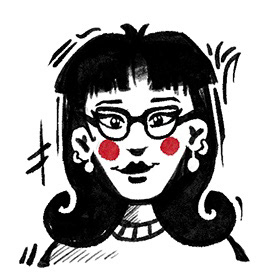

Asiye Özsoy
2D ANIMATOR + VFX
Open to freelance
Skopje / Istanbul
I graduated from Istanbul Aydın University, Fine Arts — Cartoon & Animation. I have been working in animation for about 8–9 years, and in games for 5–6 years. I make UI, symbol, background, and character animation for slot and mobile games in After Effects and Spine, with a focus on clean, engine-ready exports.
Outside work I train, I cycle, and I love trying new games.
How I work
Files delivered optimized for engine — Spine skeletons + AE exports, always clean and ready to implement.
UI, symbol, background and character animations — full pipeline from rig to final export.
Available for revisions throughout the project. Communication is fast and clear.
After Effects + Spine
Giphy
Contact
Open to freelance
To see the slots, email me. I can't share them because of NDA.
LinkedIn Behance Instagram Giphy
Skopje / Istanbul